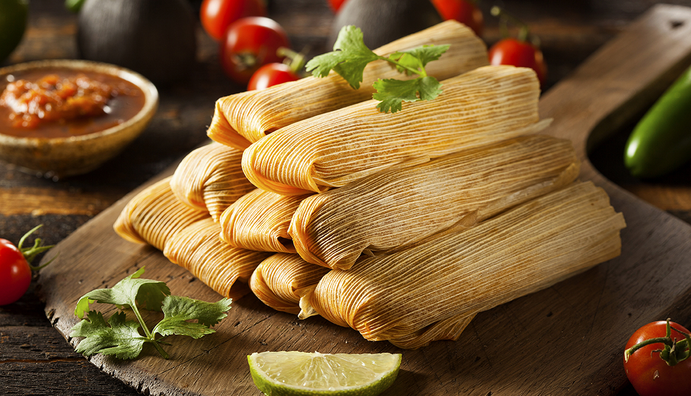

Tamales

Tamales are delicious savory or sweet parcels made with masa dough (corn-based dough) and fillings, wrapped in
corn husks and steamed. Here's a quick overview:
Basic Components
- Traditionally pork shoulder, but chicken or seafood can be used.
- Hominy: Large-kernel corn treated with lime, adding a unique texture and flavor.
- Broth: Pork, chicken, or vegetable broth forms the base.
- Masa dough: Made from masa harina (corn flour), lard or shortening, broth, and seasoning.
- Filling: Savory options like shredded meat, vegetables, and sauce; sweet options like fruit, nuts, and
spices.
- Corn husks: Soaked and softened for wrapping.
Assembly
- Spread masa dough onto a softened corn husk.
- Add a dollop of filling in the center.
- Fold the husk to enclose the filling, creating a neat packet.
- Optionally, tie the husk with string for secure closure.
Cooking
Tamales are traditionally steamed in a steamer basket over boiling water for 1-2 hours, until the masa
dough is cooked through and the filling is heated.
Variations
- Regional Styles: Different regions in Mexico have unique tamale styles with distinct fillings and
preparation methods.
- Savory Fillings: Popular options include pork, chicken, beans, cheese, and chiles.
- Sweet Fillings: Fruits like pineapple, guava, and banana are common choices.
- Instant Pot or Oven Cooking: Modern variations use pressure cookers or ovens for faster cooking.
Tips
- Use warm masa dough for easier spreading.
- Don't overfill the tamales to prevent bursting.
- Experiment with different fillings and spices to personalize your tamales.
Enjoy your delicious homemade tamales!
BACK TO KITCHEN